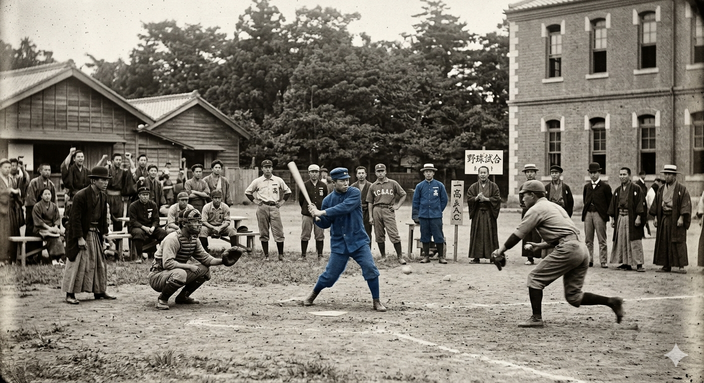
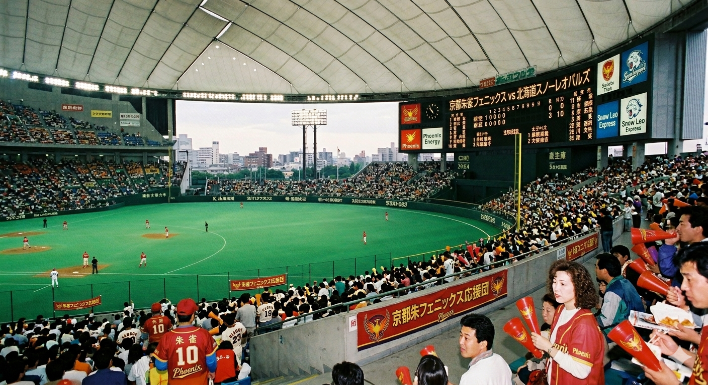

野球の歴史は、投手と打者の進化の歴史そのものです。ここでは、NPB（日本プロ野球）の黎明期から現代にいたるまで、投手の投球フォームや戦術の変化に伴い、どのように新しい球種が生まれ、更新されてきたのかを詳しく紐解いていきます。
【目次】クリックすると各項目へ移動します
1. 黎明期：ストレートとカーブの時代

日本に野球が伝来し、プロ野球（NPB）が始まった初期の時代、投手の武器は主に「速球（ストレート）」と「カーブ」の2種類のみでした。当時は先発投手が完投することが当たり前であり、いかに少ない球種で打者を打ち取るかが重視されていました。黎明期の大投手たちは、卓越したコントロールと、現代よりも大きく緩やかに曲がるカーブだけで打者を翻弄していました。この時代は、投手の身体能力と基本技術がそのまま勝負に直結していた時代と言えます。
先頭へ戻る2. 昭和中期：フォークボールの登場と縦の変化

昭和30年代に入ると、元中日ドラゴンズの杉下茂氏や、のちに「フォークボールの神様」と呼ばれた村山実氏らによって、日本球界に「フォークボール」が本格的に導入されました。それまでの横に大きく曲がるカーブとは異なり、打者の手元で急激に真下に落ちるフォークボールは、当時の打者にとって未知の恐怖でした。これにより、日本の配球に「縦の変化で空振りを取る」という画期的な新しい概念が定着することになります。
先頭へ戻る3. 平成期：カットボール・スライダーの高速化
平成に入ると、メジャーリーグ（MLB）のトレンドが日本にも強く流入し、球種の「高速化」が急速に進みます。従来の大きくスピードの遅いスライダーに代わり、ストレートと見分けがつかない速度でバットの芯を外す「カットボール」や、鋭く高速に曲がる「縦スラ」、そしてシンカーやチェンジアップが主流となりました。これにより打者は打撃の瞬間に球種を見分けることが困難になり、投手はより緻密な戦略を組み立てるようになりました。
先頭へ戻る4. 現代：スイーパーとデータサイエンスの融合
現代の野球では、トラックマンやラプソードといった高精度な弾道測定器を用いた「データサイエンス」が不可欠となっています。これにより、投球の回転数や回転軸、変化量がすべて可視化され、より科学的に変化球を設計（ピッチデザイン）することが可能になりました。その代表例が、大谷翔平選手らが見せる、横に大きく滑るように曲がる「スイーパー」です。現代の投手は、自分の特徴に合わせた最適な球種をオーダーメイドする時代を迎えています。
先頭へ戻る変化球進化を支える3大要素
歴史を通じて変化球がここまで進化した背景には、以下の要素が挙げられます。
- 用具とマウンドの変遷： ボールの縫い目の高さや、マウンドの硬さ・傾斜の変化。
- 打撃技術の向上： 打者のパワーとデータ対策に対抗するための投手の戦術的工夫。
- 映像・解析技術の発展： ハイスピードカメラによる、リリース時の指離れの科学的検証。